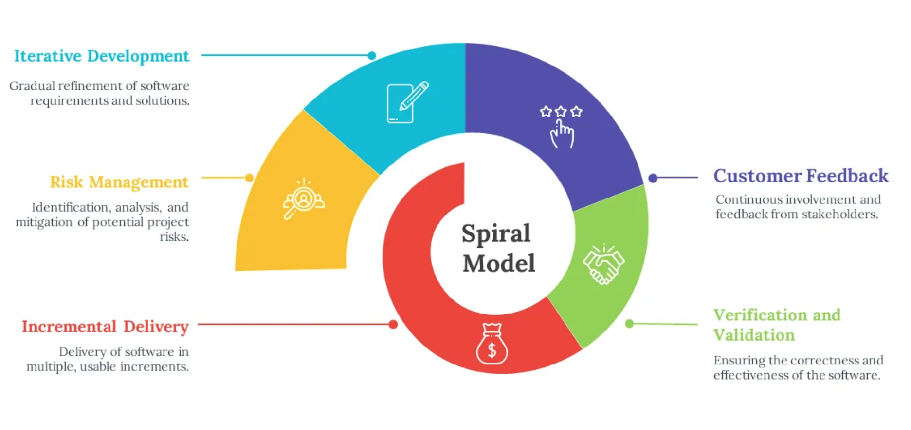
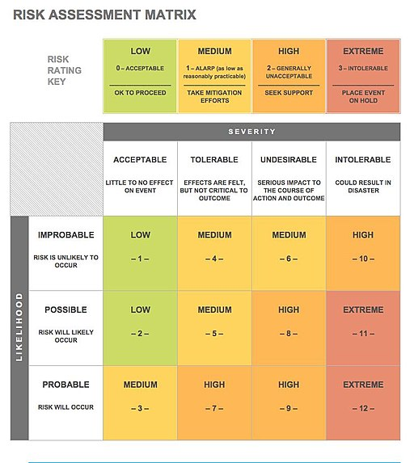

Chapitre 7 : Le modèle en spirale
Le modèle en spirale = modèle itératif + gestion des risques. À chaque cycle, on évalue les risques avant de poursuivre.
Avantages, limites et usages
Avantages |
Limites / Défis |
Bon pour |
|---|---|---|
Tous les avantages de l’itératif ; modèle très sûr grâce à la gestion des risques |
Comme l’itératif, le logiciel peut dériver ; perte possible de temps/argent sur une itération |
Gros projets à forte sensibilité (hôpital, aéronautique, …) |
Difficile à mettre en œuvre : l’évaluation des risques est multifactorielle. Défi : bien évaluer et prioriser les risques + gérer proprement la documentation (coûteuse) |
Projets à haut risque, R&D, projets d’IA (à cause de la versatilité des modèles) |
Exercice
Pour un logiciel critique (ex. gestion hospitalière), identifiez trois risques majeurs et l’ordre dans lequel vous les traiteriez.
Comment ça marche ?
On répète des cycles combinant développement et analyse des risques : planification → analyse des risques → développement → évaluation, puis on recommence pour le cycle suivant.

Le modèle en spirale : un modèle itératif piloté par la gestion des risques.

À chaque tour de spirale, on réévalue les risques et on priorise.